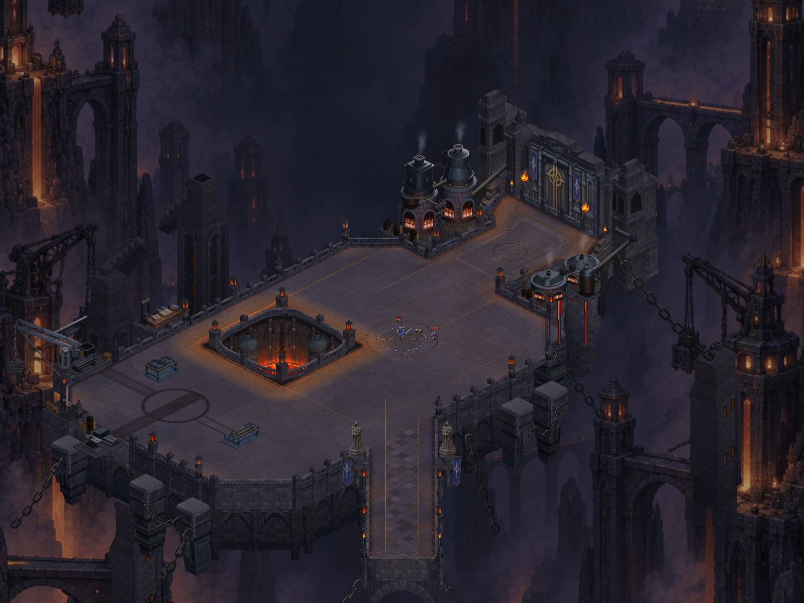
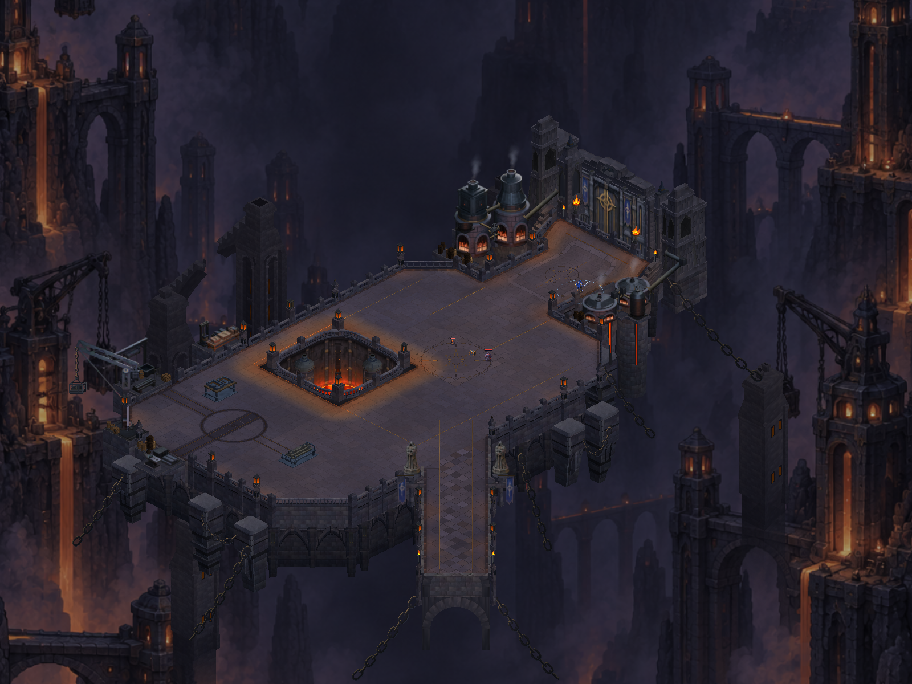
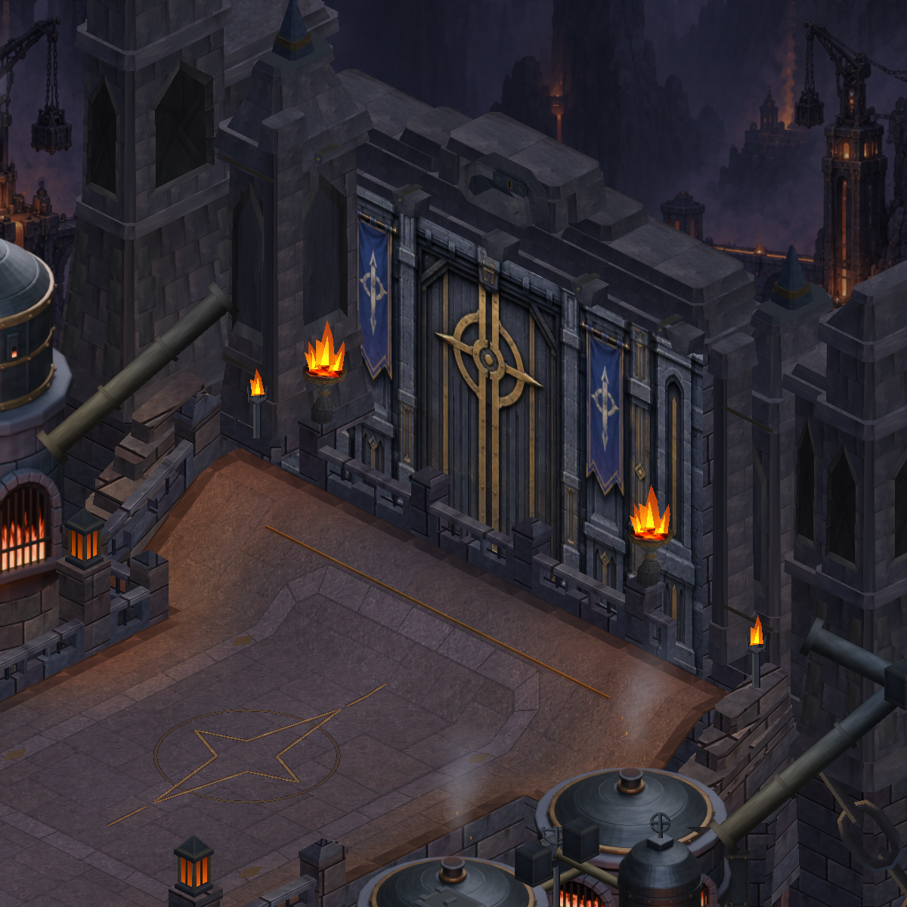
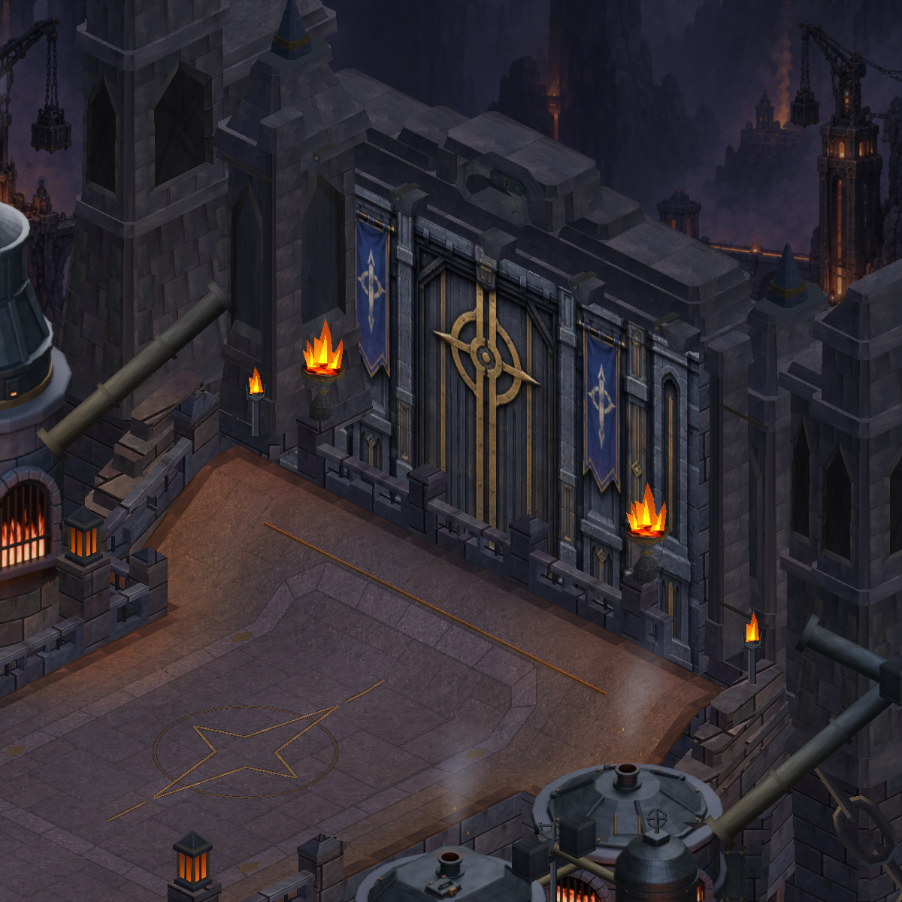
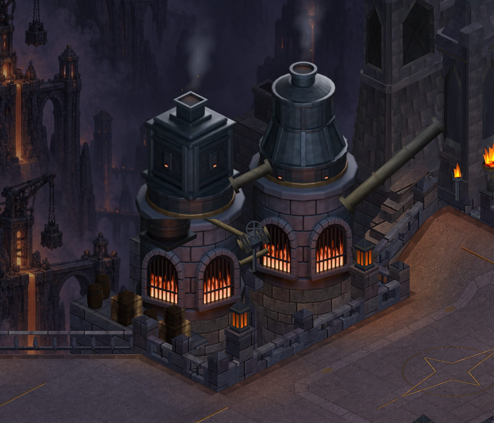
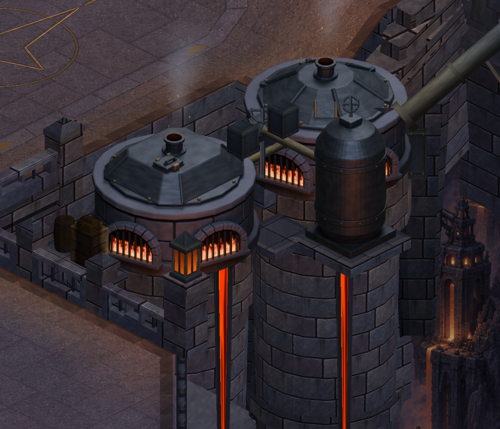
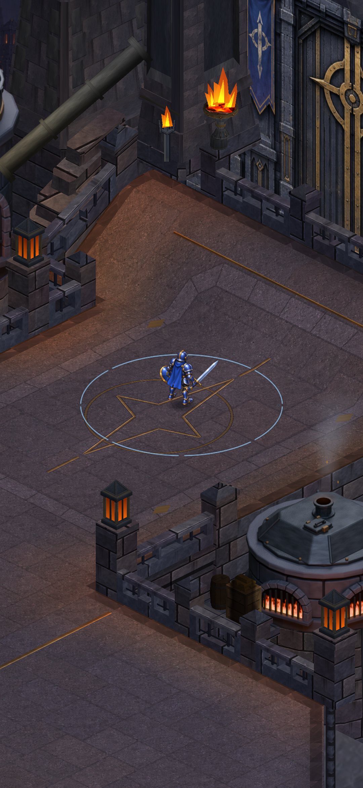
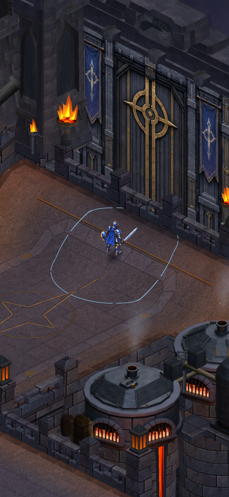

CRYPTFORGE · GERÇEK UNITY GÖRÜNTÜLERİ
Avluyu çevreleyen dört ayrı fırın
Arkadaki iki yüksek fırın ve öndeki iki alçak fırın artık farklı üretim yapıları olarak tasarlanıyor. Mevcut yerleşim korunuyor; değişiklikler Blender geometrisi, taş ve metal yüzeyleri ile oyun içi görsellere uygulanıyor.
Görüntüler Unity’den alınmıştır; telefon ekran görüntüsü değildir. Kapsam ve doğrulama kaydı. Referansın bütün ayrıntıları henüz tamamlanmış değildir.

Sonra
Aynı kameradan haritanın bütünü
Önce · 2c3c836
Sonra · aynı ölçek
Kapı çevresindeki fırınlar

Önce
Sonra · aynı kameraYeni yapılar — yakın görünüm

İki ayrı yüksek fırın · son sürüm
İki ayrı alçak fırın · son sürümDikey oynanış görünümü
Karakterin ayakları ve fırın bağlantıları mevcut kamera ölçüsünde kontrol ediliyor.

Yaklaşım · u22
Rampa · u26Onaylı referansı tam boy aç · Teknik kayıt